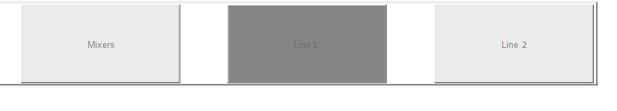
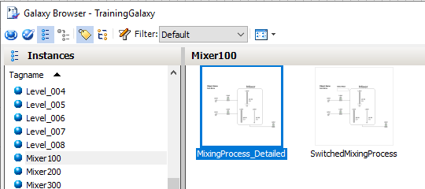
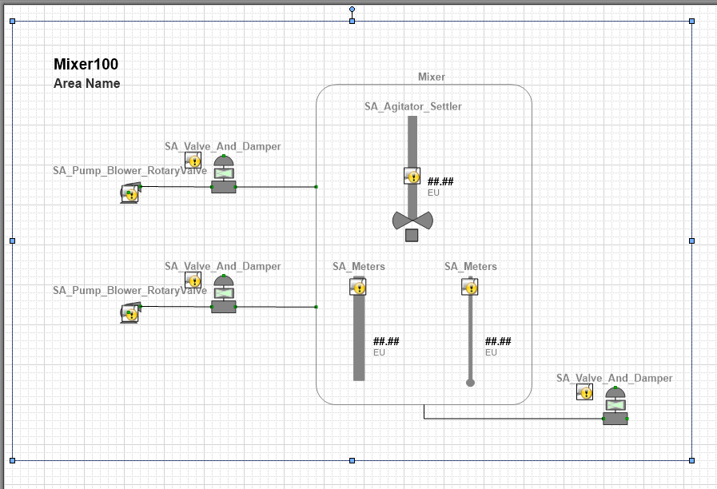

Module 3 — Symbols | Pages 249–254
Do Not Copy 3-151 AVEVA™ InTouch for System Platform 2023 Associating Scripts with Graphics You can associate scripts with the symbols placed in your InTouch applications. You can use scripts to animate your graphics or modify their elements, while an InTouch application is running. After selecting a graphic embedded in an InTouch window, you select the expression or reference whose value triggers the script to run. You use the Graphic Editor to select the trigger that runs the script. Key points include: A symbol script can be either predefined or named. A predefined script runs based on the status of the symbol in the running application. A named script runs when an expression or references associated with the script changes state. Predefined scripts are similar to InTouch window scripts. Based upon how you configure the script trigger, a predefined symbol script can run: Once, after the symbol opens or is shown Periodically, while the symbol appears in the running application Once, after the symbol closes or is hidden Based upon how you configured the script, a named symbol script can run, when the trigger values or expressions are true, false, or transitioning between true and false states. Also, a named symbol script can run, when data associated with the trigger expression changes value or its quality state changes value. Execution Types and Triggers The existence and execution order of scripts associated with an object are inherently locked at each stage of development in the template, derived template, and instance. For example, a set of scripts associated with a template are treated as an ordered block in the Configure Execution Order dialog box when configuring execution order in a next-generation derived template. New scripts in the derived template can be ran in any order before and after the template’s block of scripts. The derived template’s execution order is treated as a block in any downstream derived templates or instances. Scripts cannot trigger any faster than the scan period of the AppEngine the script is associated with or faster than the scan period of the AppEngine that hosts the object that the script is associated with. Scripts run in one of two modes: Synchronous scripting mode is the default for running scripts in the runtime environment. This mode runs scripts in order while an object is running on scan. Asynchronous scripting mode is a group of scripts running on the same, lower priority execution thread. These scripts only support Execute triggering and run independently from each other. Set the maximum number of independent threads in the AppEngine configuration editor. To use either scripting mode, you must select Execute as the Execution Type in the Scripts area on the Scripts tab. Execution Type triggers include: Startup, On Scan, Execute, Off Scan, and Shutdown.
Do Not Copy 3-152 AVEVA™ Training ShowGraphic() Function Associating all Galaxy graphics with an InTouchViewApp template enables deployed and published InTouch applications to run show graphic requests made of any graphic in the Galaxy without having to embed them in the application. The ShowGraphic() function uses the graphic as a parameter. Associating all Galaxy graphics ensures that: The graphic is deployed and available at runtime, whether or not it is referenced by an InTouchViewApp Template symbols referenced by the ShowGraphic() function are deployed and available at runtime Note: The term graphic includes any symbol or client control present in the Graphic Toolbox, and any symbols owned or inherited by templates and instances. About the Show/Hide Graphic Functions The Show/Hide Graphic script functions allow you to write graphic scripts to display a symbol as a popup window and close the popup window. The Show/Hide Graphic script functions are in addition to the Show/Hide Symbol animation feature, which allows you to display a symbol as a popup window through symbol animation. The Show/Hide Symbol animation feature remains unchanged. You can use Show/Hide Symbol animation and the Show/Hide Graphic script functions together Like the Show/Hide Symbol animation feature, you can control the properties of the symbol through the Show Graphic script function. You can configure the script to specify: Which symbol will appear as the popup window Whether the window will have a title bar The initial position of the popup window Whether the window can be resized Whether the window will be modal or modeless The relative position of the popup window Passing the OwningObject to the symbol to display Values of the custom properties of the symbol Configuring the Show/Hide Graphic Script Functions When configuring this feature, include a script that contains the ShowGraphic script function to display a symbol as a popup window at runtime. You can also include a script that contains the HideGraphic script function. The HideGraphic script function allows the closing of any symbol displayed through the ShowGraphic script function. Important: The ShowGraphic script function can be used in the action script of a symbol, named script, and predefined script. Although the system allows the inclusion of it in a server script, such as Start Up, On Scan, Off Scan, Shut Down, and Execute, the function cannot be ran at runtime.
Do Not Copy 3-153 AVEVA™ InTouch for System Platform 2023 The HideGraphic script function can be called from any graphic that is being used in the InTouch application. ShowGraphic() Syntax Use the ShowGraphic() to display a graphic within a popup window. Dim graphicInfo as aaGraphic.GraphicInfo; graphicInfo.Identity = "
Do Not Copy 3-154 AVEVA™ Training Any graphic displayed by the ShowGraphic script function or ShowSymbol animation always remains in front of InTouch windows, except InTouch popup windows. Even if you click an InTouch window, the window remains behind these graphics. Enabling in-memory graphics caching in WindowViewer memory properties will keep ShowGraphic and ShowSymbol animation popup symbols cached in memory. The system tracks the order in which graphics are closed in order to determine their age. If a user- defined in-memory limit is exceeded, the system automatically removes the oldest popup symbols in the in-memory graphics cache, except those defined in high-priority windows. If you display a symbol with the ShowGraphic script function or with ShowSymbol animation, WindowViewer will perform a memory health check. Behavior of ShowGraphic Windows with the Same Identity ShowGraphic popup windows attempting to open a popup window with the same Identity exhibit the following behavior with the predefined scripts OnHide, OnShow, and WhileShowing: A ShowGraphic script function within an OnShow script will be blocked, if a ShowGraphic popup window with the same Identity is already displayed. A ShowGraphic script function within an WhileShowing script will be blocked, if a ShowGraphic popup window with the same Identity is already displayed. A ShowGraphic script function within an OnHide script will be blocked, if a ShowGraphic popup window with the same Identity is already displayed. No error or warning messages will appear in the logger, when script execution is blocked as described. With the Graphic cache memory option enabled, calling ShowGraphic popup windows with the same identity name, if the symbol is modal to the modal symbol behind it, calling the ShowGraphic script function cannot change this symbol to be modeless to the current modal symbol. Closing a Symbol You can close a symbol, displayed using the ShowGraphic script function, by running the HideGraphic or HideSelf script functions, clicking the Close Window button of the graphic popup window, if configured, or by closing WindowViewer. You cannot close the graphic by closing the InTouch window or the symbol that opened the graphic. Windows opened by the ShowGraphic script function or ShowSymbol animation are loaded dynamically and are not exposed at runtime. You cannot close these windows using the WindowViewer Close Window dialog box.
Do Not Copy 3-155 AVEVA™ InTouch for System Platform 2023 Introduction In this lab, you will create a navigation symbol that will provide buttons you can click to display different windows in runtime. You will add animations using action scripts and use the ShowGraphic() script function to show specific windows and graphics. Script files for labs in this course may be found in the C:\Training folder on your student machine. You may copy and paste from these files when directed. Objectives Upon completion of this lab, you will be able to: Create a reusable button Create predefined and named scripts for graphics Add an Action Script animation to a graphic Use the ShowGraphic() script function Use the Select Alternate Instance feature Use alignment tools

Do Not Copy 3-156 AVEVA™ Training Create a Production Area Mixer Display First, you will create two symbols, each using a different method to display the mixers in the Production area. In the first symbol, you will embed graphics to show mixers. In the second symbol, you will use scripting to show mixers. 1. In the IDE, on the Graphics tab, in the Training toolset, create a new symbol named Line1_MixingProcess, and then open it for editing. 2. On the canvas, right-click and select Embed Industrial Graphic, and then from Instances embed Mixer100\MixingProcess_Detailed. 3. Place it in the top-left corner of the canvas.


Review the sections above for the main topics, step-by-step procedures, and important configuration details.
This is part of the InTouch HMI layer, which integrates with Application Server's Galaxy for a complete visualization solution.
Module 3 — Symbols. AVEVA InTouch for System Platform 2023 Training.
Next: Lesson L21 — Lab 10 – Creating a Navigation Symbol